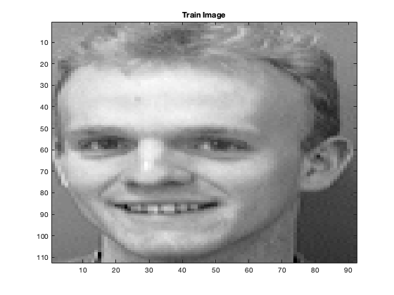

X_train = csvread('X_train.csv');
Y_train = csvread('Y_train.csv');
disp('2a)')
M = 112;
N = 92;
X_train_new = X_train - mean(X_train);
n = size(X_train_new,1);
S = 1/n * (X_train_new' * X_train_new);
[V, ~] = eigs(S, 10);
for i=1:10
figure();colormap(gray);
imagesc(reshape(V(:,i), M, N));
snapnow;
end
disp("Characteristics captured by eigenfaces :-");
fprintf("1 - Most of the Hair \n 2 - eyes and nose \n 3 - eyes \n 4 - Hair \n 5 - Right side of face");
fprintf("6 - Hair, eyes and mouth \n 7 - Cheeks \n \n 8 - One eye \n 9 - Chin \n 10 - eyebrows, nose and mustache, ears, chin \n");
disp('2b)');
D = eigs(S, M*N);
plot(D);xlim([0 100]);
title('Elbow Plot');
snapnow;
elbow = 20;
fprintf('Elbow is approximately found at q=%d \n', elbow);
var = (sum(D(1:elbow))*100)/sum(D);
fprintf("Percentage of variance explained = %f \n", var);
disp('2c)');
X_test = csvread('X_test.csv');
Y_test = csvread('Y_test.csv');
[V, ~] = eigs(S, 50);
X_P_train = X_train_new*V;
X_test_new = X_test - mean(X_test);
X_P_test = X_test_new*V;
correctly_classified = 0;
Y_pred=zeros(size(X_P_test,1));
for i=1:size(X_P_test,1)
dist = zeros(size(X_train,1),1);
for j=1:size(X_train,1)
dist(j)=norm(X_P_train(j,:)'-X_P_test(i,:)');
end
[~,ind] = min(dist);
Y_pred(i) = Y_train(ind);
if Y_test(i)==Y_pred(i)
correctly_classified = correctly_classified+1;
else
figure
colormap(gray);
imagesc(reshape(X_test(i,:), M, N));
title('Test Image')
snapnow;
figure
colormap(gray);
imagesc(reshape(X_train(ind,:), M, N));
title('Train Image')
snapnow;
end
end
fprintf("Correctly classified Fraction with PCA = %.2f%% \n", (correctly_classified*100)/size(X_test,1));
correctly_classified = 0;
disp('2d)');
for i=1:size(X_test,1)
dist = zeros(size(X_train,1),1);
for j=1:size(X_train,1)
dist(j)=norm(X_train(j,:)'-X_test(i,:)');
end
[~,ind] = min(dist);
Y_pred(i) = Y_train(ind);
if Y_test(i)==Y_pred(i)
correctly_classified = correctly_classified+1;
else
figure
colormap(gray);
imagesc(reshape(X_test(i,:), M, N));
title('Test Image')
snapnow;
figure
colormap(gray);
imagesc(reshape(X_train(ind,:), M, N));
title('Train Image')
snapnow;
end
end
fprintf("Correctly classified Fraction without PCA = %.2f%% \n", (correctly_classified*100)/size(X_test,1));
2a)
Characteristics captured by eigenfaces :-
1 - Most of the Hair
2 - eyes and nose
3 - eyes
4 - Hair
5 - Right side of face6 - Hair, eyes and mouth
7 - Cheeks
8 - One eye
9 - Chin
10 - eyebrows, nose and mustache, ears, chin
2b)
Elbow is approximately found at q=20
Percentage of variance explained = 70.266018
2c)
Correctly classified Fraction with PCA = 95.00%
2d)

Correctly classified Fraction without PCA = 92.50%